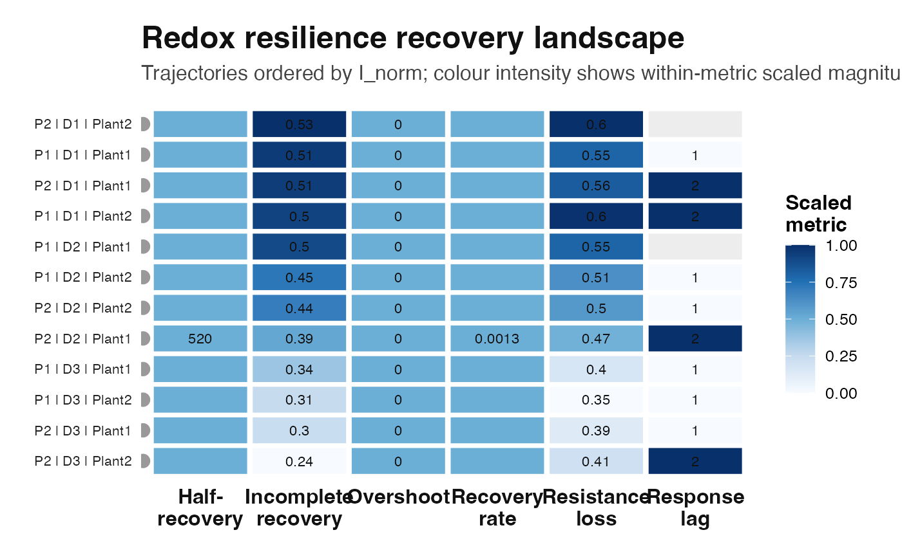

Plot a recovery landscape from RRI perturbation-recovery metrics
Source:R/plot_rri_recovery_landscape.R
plot_rri_recovery_landscape.RdVisualises user-level perturbation-recovery metrics from
rri_recovery_metrics(). Each row is one trajectory and each column is a
core resilience metric. Values are scaled within metric columns to make
amplitudes, overshoot, incomplete recovery, and recovery times comparable.
Arguments
- rec
A data frame returned by
rri_recovery_metrics().- group_cols
Character vector identifying trajectory labels.
- metrics
Character vector of recovery metric columns to plot.
- order_by
Character scalar. Metric used to order trajectories.
- base_size
Numeric. Base font size.
Examples
sim <- simulate_redox_holobiont(
n_plot = 2,
n_depth = 3,
n_plant = 2,
n_time = 12,
p_micro = 20,
seed = 109
)
res <- suppressWarnings(rri_pipeline_st(
ROS_flux = sim$ROS_flux,
Eh_stability = sim$Eh_stability,
micro_data = sim$micro_data,
id = sim$id,
reducer = "per_domain",
scaling = "pnorm"
))
rec <- rri_recovery_metrics(
res = res,
id = sim$id,
time_col = "time",
group_cols = c("plot", "depth", "plant_id"),
perturb_start = 5,
perturb_end = 7
)
head(rec)
#> plot depth plant_id baseline_rri min_rri depth_min depth_min_frac tau_lag
#> 1 P1 D1 Plant1 0.3329871 0.1500511 0.1829360 0.5493787 1
#> 2 P2 D1 Plant1 0.4743155 0.2099911 0.2643244 0.5572754 2
#> 3 P1 D2 Plant1 0.5017434 0.2262182 0.2755252 0.5491357 NA
#> 4 P2 D2 Plant1 0.7444396 0.3919763 0.3524633 0.4734612 2
#> 5 P1 D3 Plant1 0.6880756 0.4159029 0.2721727 0.3955563 1
#> 6 P2 D3 Plant1 0.8925822 0.5483541 0.3442280 0.3856542 1
#> k_recovery t_half overshoot overshoot_frac H_hysteresis H_axis
#> 1 NA NA 0 0 NA unavailable
#> 2 NA NA 0 0 NA unavailable
#> 3 NA NA 0 0 NA unavailable
#> 4 0.001344394 515.5836 0 0 NA unavailable
#> 5 NA NA 0 0 NA unavailable
#> 6 NA NA 0 0 NA unavailable
#> temporal_asymmetry incomplete_return incomplete_return_frac
#> 1 -0.3710364 -0.1712451 -0.5142695
#> 2 -0.3246490 -0.2428257 -0.5119497
#> 3 -0.3626813 -0.2493643 -0.4969956
#> 4 -0.2927522 -0.2894272 -0.3887853
#> 5 -0.2652575 -0.2368002 -0.3441486
#> 6 -0.2517189 -0.2716650 -0.3043586
#> displaced_plateau_flag displaced_plateau_level alt_routing_flag
#> 1 TRUE 0.1617420 NA
#> 2 TRUE 0.2314898 NA
#> 3 FALSE NA NA
#> 4 FALSE NA NA
#> 5 FALSE NA NA
#> 6 FALSE NA NA
#> alt_routing_level n_pre n_perturb n_recovery n_missing n_fit
#> 1 NA 4 3 5 0 2
#> 2 NA 4 3 5 0 2
#> 3 NA 4 3 5 0 2
#> 4 NA 4 3 5 0 5
#> 5 NA 4 3 5 0 1
#> 6 NA 4 3 5 0 1
#> fit_status fit_r_squared fit_start_time
#> 1 insufficient_positive_deficits NA 11
#> 2 insufficient_positive_deficits NA 11
#> 3 insufficient_positive_deficits NA 11
#> 4 fitted_conditional_exponential 6.069839e-05 7
#> 5 insufficient_positive_deficits NA 12
#> 6 insufficient_positive_deficits NA 12
#> final_observation_time hysteresis_status k H I H_abs
#> 1 12 not_evaluated NA NA 0.1712451 NA
#> 2 12 not_evaluated NA NA 0.2428257 NA
#> 3 12 not_evaluated NA NA 0.2493643 NA
#> 4 12 not_evaluated 0.001344394 NA 0.2894272 NA
#> 5 12 not_evaluated NA NA 0.2368002 NA
#> 6 12 not_evaluated NA NA 0.2716650 NA
#> H_norm I_norm
#> 1 NA 0.5142695
#> 2 NA 0.5119497
#> 3 NA 0.4969956
#> 4 NA 0.3887853
#> 5 NA 0.3441486
#> 6 NA 0.3043586
plot_rri_recovery_landscape(
rec,
metrics = c("depth_min_frac", "overshoot_frac", "I_norm",
"k", "tau_lag", "t_half")
)
#> `trajectory_class` not supplied; derived from displaced_plateau_flag and incomplete_return_frac.
#> Warning: No shared levels found between `names(values)` of the manual scale and the
#> data's colour values.
#> Warning: No shared levels found between `names(values)` of the manual scale and the
#> data's colour values.
